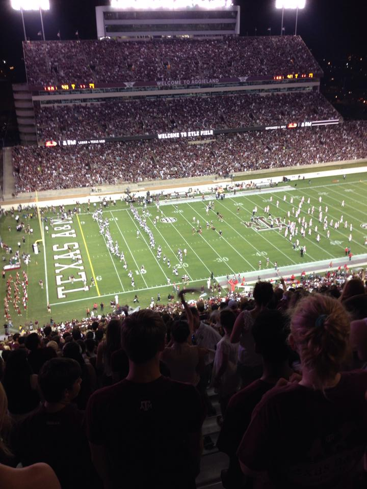

Thomas Armstrong: A Summary

My name is Thomas Aaron Armstrong, but I prefer to go by Aaron. I am from Gladewater, Texas and I graduated from Gladewater High School in a relatively small class of 100. I started attending Texas A&M University in 2014 and I am currently a senior Technology Management major. I am a lover of the arts with music being a particular favorite. I regularly attend concerts and music festivals and have a great time doing so. I also love to travel and have been to Europe(Hungary and Budapest) for a study abroad trip. I plan to visit Spain, Italy, and France for another study abroad trip Spring Break 2018. I have a dog named Caci and a cat named Squeaky.
[Reach me Here]
|